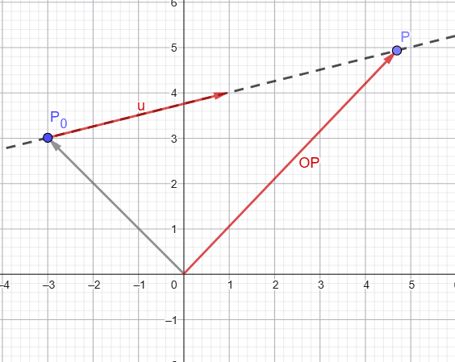
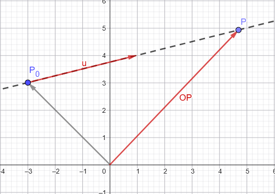
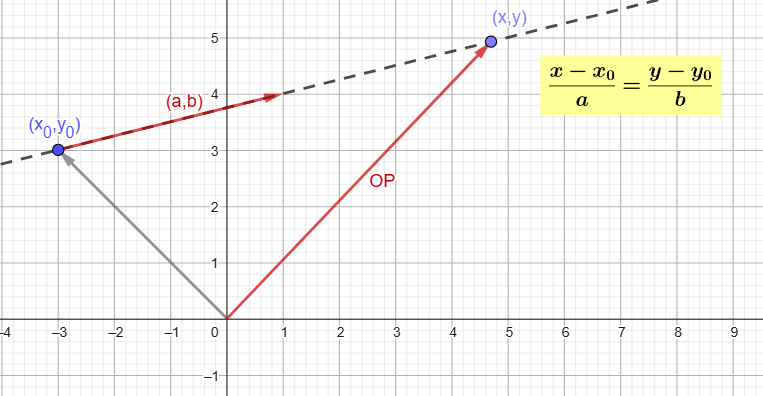
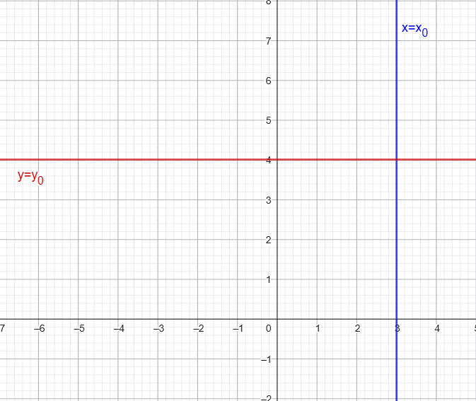
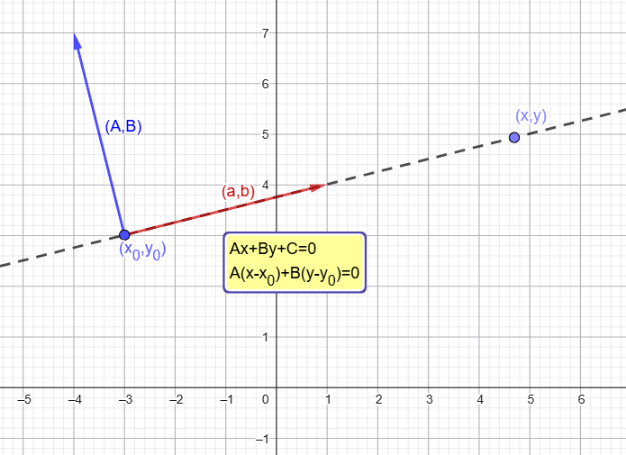
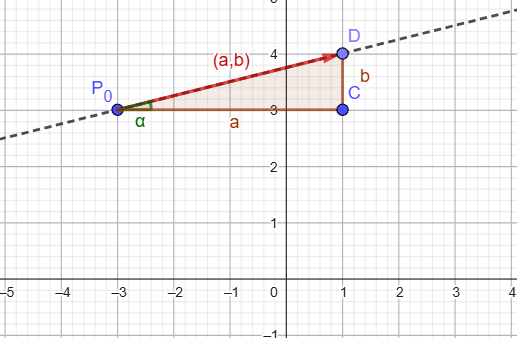
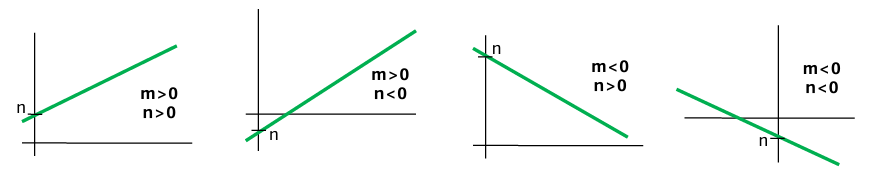
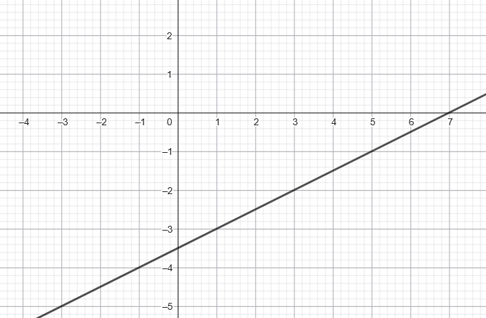

Varias son las formas de determinar una recta en el plano afín. En esta página se estudian muchas de ellas
Ecuación vectorial
Consideramos una recta \( r \) determinada por un punto \( P_0(x_0,y_0) \) y un vector director \( \vec{u} = (a,b) \).

Sea \( P(x,y) \) un punto cualquiera de la recta. Entonces, si \( P \in r \), el vector \( \overrightarrow{P_0P} \) es proporcional al vector director \( \vec{u} \).
\[ P \in r \;\Rightarrow\; \overrightarrow{P_0P} = \lambda \vec{u}, \quad \lambda \in \mathbb{R} \]
El número \( \lambda \) se llama parámetro y permite generar todos los puntos de la recta.
Por otra parte, se cumple la relación vectorial:
\[ \vec{OP} = \vec{OP_0} + \overrightarrow{P_0P} \]
Sustituyendo:
\[ \vec{OP} = \vec{OP_0} + \lambda \vec{u} \]
La ecuación vectorial de una recta que pasa por el punto \( P_0(x_0,y_0) \) y tiene como vector director \( \vec{u} = (a,b) \) es:
\[ \vec{OP} = \vec{OP_0} + \lambda \vec{u}, \quad \lambda \in \mathbb{R} \]
Ecuaciones paramétricas
Partimos de la ecuación vectorial de la recta:
\[ \vec{OP} = \vec{OP_0} + \lambda \vec{u} \]
donde \( P_0(x_0,y_0) \) es un punto de la recta y \( \vec{u} = (a,b) \) es un vector director.

Escribimos ahora los vectores en coordenadas:
\[ (x,y) = (x_0,y_0) + \lambda (a,b) \]
Igualando componente a componente, obtenemos:
\[ \begin{cases} x = x_0 + \lambda a \\ y = y_0 + \lambda b \end{cases} \]
Estas expresiones permiten obtener todos los puntos de la recta al variar el parámetro \( \lambda \in \mathbb{R} \).
La ecuación paramétrica de una recta que pasa por el punto \( P_0(x_0,y_0) \) y tiene como vector director \( \vec{u} = (a,b) \) es:
\[ \begin{cases} x = x_0 + \lambda a \\ y = y_0 + \lambda b \end{cases} \quad \lambda \in \mathbb{R} \]
¿Para qué podemos utilizar la ecuación paramétrica?
- Para generar puntos de la recta, se dan valores al parámetro \( \lambda \).
- Para comprobar si un punto pertenece a la recta, se sustituyen sus coordenadas en el sistema y se resuelve. Debe obtenerse un único valor de \( \lambda \) compatible en ambas ecuaciones.
Practica la ecuación paramétrica
1. Dado el punto \( A(2,1) \) y el vector director \( \vec{u} = (3,-1) \), se pide:
a) Hallar las ecuaciones paramétricas de la recta \( r \) que determinan.
b) Obtener otros tres puntos cualesquiera de dicha recta.
c) Comprobar analíticamente si los puntos \( P(5,0) \) y \( Q(4,2) \) pertenecen a \( r \).
d) Dibujar dicha recta y comprobar gráficamente los apartados anteriores.
e) Indicar otras ecuaciones paramétricas para la recta.
2. Dados los puntos \( A(0,2) \) y \( B(4,6) \), se pide:
a) Hallar las ecuaciones paramétricas de la recta \( s \) que determinan.
b) Obtener otros tres puntos cualesquiera de dicha recta.
c) Comprobar analíticamente si los puntos \( P(2,4) \) y \( Q(3,5) \) pertenecen a \( s \).
d) Dibujar dicha recta y comprobar gráficamente los apartados anteriores.
Ecuación continua y ecuación implícita (general)
Ecuación continua de la recta
Partimos de las ecuaciones paramétricas de la recta:
\[ \begin{cases} x = x_0 + \lambda a \\ y = y_0 + \lambda b \end{cases} \]
Despejamos el parámetro \( \lambda \) en ambas ecuaciones:
\[ \lambda = \frac{x - x_0}{a}, \quad \lambda = \frac{y - y_0}{b} \]
Igualando:
\[ \frac{x - x_0}{a} = \frac{y - y_0}{b} \]

La ecuación continua de una recta que pasa por el punto \( P_0(x_0,y_0) \) y tiene como vector director \( \vec{u} = (a,b) \) es:
\[ \frac{x - x_0}{a} = \frac{y - y_0}{b} \]
Recordemos que no existe la división por \(0\), por lo que en la ecuación continua los valores \(a\) y \(b\) no pueden ser nulos simultáneamente.
Si alguno de ellos es \(0\), aparecen casos especiales:
- Si \( a = 0 \) → recta vertical: \(x = x_0 \)
- Si \( b = 0 \) → recta horizontal: \( y = y_0 \)

Ecuación implícita de la recta
Partimos de la ecuación continua:
\[ \frac{x - x_0}{a} = \frac{y - y_0}{b} \]
Multiplicando en cruz:
\[ b(x - x_0) = a(y - y_0) \]
Desarrollando:
\[ bx - bx_0 = ay - ay_0 \]
Operando y despejando llegamos a una expresión del tipo:
\[ Ax + By + C = 0 \]
La ecuación implícita de una recta tiene la forma:
\[ Ax + By + C = 0 .\]
Veremos más adelante que \( (A,B) \) es un vector normal a la recta.

Practicamos las ecuaciones implícita y continua
3. Con los datos siguientes (de ej. 1): punto \( A(2,1) \) y vector director \( \vec{u} = (3,-1) \), se pide:
a) Hallar las ecuaciones continua e implícita de la recta \( r \) que determinan.
b) Comprobar en la ecuación general que un vector normal es \( (-b,a) \).
c) A partir de la ecuación general, obtener otros tres puntos cualesquiera de dicha recta.
d) Comprobar en ambas ecuaciones si los puntos \( P(5,0) \) y \( Q(4,2) \) pertenecen a \( r \).
4. Con los datos siguientes (de ej. 2): puntos \( A(0,2) \) y \( B(4,6) \), se pide:
a) Hallar las ecuaciones continua e implícita de la recta \( s \) que determinan.
b) Comprobar en la ecuación general que un vector normal es \( (-b,a) \).
c) A partir de la ecuación general, obtener otros tres puntos cualesquiera de dicha recta.
d) Comprobar en ambas ecuaciones si los puntos \( P(2,4) \) y \( Q(3,5) \) pertenecen a \( s \).
5. Hallar las ecuaciones paramétricas e implícitas de los ejes de coordenadas.
Ecuación punto-pendiente y ecuación explícita
Partimos de la ecuación continua de la recta:
\[ \frac{x - x_0}{a} = \frac{y - y_0}{b} \]
Despejamos \( y - y_0 \):
\[ y - y_0 = \frac{b}{a}(x - x_0) \]
Definimos:
\[ m = \frac{b}{a} \]
donde \( m \) se llama pendiente de la recta.
Sustituyendo:
\[ y - y_0 = m(x - x_0) \]
Observaciones:
1) La pendiente puede interpretarse como:
\[ m = \frac{b}{a} = an(\alpha) \]
donde \( \alpha \) es el ángulo que forma la recta con la dirección positiva del eje \( x \).
Por tanto, la pendiente indica la inclinación de la recta.
2) El signo de \( m \) nos informa sobre el comportamiento de la recta:
- \( m > 0 \) → recta creciente
- \( m < 0 \) → recta decreciente
- \( m = 0 \) → recta horizontal

La ecuación punto-pendiente de una recta que pasa por el punto \( P_0(x_0,y_0) \) y tiene pendiente \( m \) es:
\[ y - y_0 = m(x - x_0) \]
La pendiente puede calcularse a partir del vector director \(\overrightarrow{(a,b)}\) como \(m = \frac{b}{a} \).
Ecuación explícita de la recta
Partimos de la ecuación punto-pendiente:
\[ y - y_0 = m(x - x_0) \]
Desarrollando:
\[ y - y_0 = mx - mx_0 \]
Despejando \( y \):
\[ y = mx - mx_0 + y_0 \]
Lo que equivale a:
\[ y = mx + n \]
Observaciones:
1) El término independiente \( n \), llamado ordenada en el origen, indica el punto donde la recta corta al eje \( y \).
2) En función de los signos de \( m \) y \( n \), la recta puede presentar distintos comportamientos:
- \( m > 0 \) → recta creciente
- \( m < 0 \) → recta decreciente
- \( n > 0 \) → corta al eje \( y \) por encima del origen
- \( n < 0 \) → corta al eje \( y \) por debajo del origen

La ecuación explícita de una recta es:
\[ y = mx + n \]
donde:
- \( m \) es la pendiente
- \( n \) es la ordenada en el origen
Practicando las ecuaciones punto-pendiente y explícita
6. Dado el punto \( A(2,1) \) y el vector director \( \vec{u} = (3,-1) \), se pide:
a) Hallar la ecuación punto-pendiente de la recta \( r \) directamente a partir de los datos.
b) Hallarla a partir de la ecuación continua.
c) Operarla para comprobar que se obtiene la ecuación general.
7. Dados los puntos \( A(0,2) \) y \( B(4,6) \), se pide:
a) Hallar la ecuación punto-pendiente de la recta \( s \) directamente a partir de los datos.
b) Hallarla a partir de la ecuación continua.
c) Operarla para comprobar que se obtiene la ecuación general.
Dado el punto \( A(2,1) \) y el vector director \( \vec{u} = (3,-1) \), se pide:
a) Hallar la ecuación explícita de la recta \( r \) directamente a partir de los datos.
b) Hallarla a partir de las formas anteriores.
Dados los puntos \( A(0,2) \) y \( B(4,6) \), se pide:
a) Hallar la ecuación explícita de la recta \( s \) directamente a partir de los datos.
b) Hallarla a partir de las formas anteriores.
Resumen de las distintas ecuaciones de la recta
| Tipo de ecuación | Ecuación | Datos |
|---|---|---|
| Vectorial | \[ \vec{OP} = \vec{OP_0} + \lambda \vec{u} \] |
\( P_0(x_0,y_0) \): punto de la recta \( \vec{u} = (a,b) \): vector director \( \lambda \in \mathbb{R} \): parámetro \( m = \dfrac{b}{a} \): pendiente (si \( a e 0 \)) \( n \): ordenada en el origen |
| Paramétrica | \[ \begin{cases} x = x_0 + \lambda a \\ y = y_0 + \lambda b \end{cases} \] | |
| Continua | \[ \frac{x - x_0}{a} = \frac{y - y_0}{b} \] | |
| Punto-pendiente | \[ y - y_0 = m(x - x_0) \] | |
| Explícita | \[ y = mx + n \] | |
| Implícita (general) | \[ Ax + By + C = 0 \] |
\( (A,B) \): vector normal \( (-B,A) \): vector director |
Un repaso de las ecuaciones de la recta
Ejercicios varios de consolidación
- Hallar la ecuación de la recta que pasa por el punto \( A(3,5) \) y tiene la dirección del vector \( \vec{u} = (2,-4) \) en todas las formas posibles. Dibujarla.
- Ídem para el punto \( A(3,1) \) y \( \vec{u} = (4,-2) \).
- Ídem para el punto \( A(3,1) \) y \( \vec{u} = (0,2) \).
- Ídem para el punto \( A(3,-1) \) y \( \vec{u} = (5,0) \).
-
- Hallar la ecuación de la bisectriz del 1º y 3º cuadrantes.
- Ídem para la del 2º y 4º cuadrantes.
- Hallar la ecuación de las dos trisectrices del 1º cuadrante.

Dada la recta de la figura, hallar su ecuación:- Directamente, en forma continua.
- En forma general, operando a partir de la anterior.
- Directamente, en forma punto-pendiente.
- Directamente, en forma explícita.
- Hallar la ecuación de la recta que pasa por los puntos \( A(3,2) \) y \( B(1,-4) \) en todas las formas posibles. Dibujarla.
- Representar las siguientes rectas:
- \( 2x + 3y - 7 = 0 \)
- \( x = 3 \)
- \( y = 2 \)
- \( \begin{cases} x = 3 - \lambda \\ y = -5 + 2\lambda \end{cases} \)
- \( \frac{x - 1}{2} = \frac{y + 3}{-1} \)
- \( y - 2 = 2(x - 3) \)
- \( y = 3x + 2 \)
- Pasar a forma explícita las siguientes rectas y calcular sus pendientes:
- \( \frac{x - 3}{2} = \frac{y + 5}{-1} \)
- \( 5x + 3y + 6 = 0 \)
- \( \begin{cases} x = 2 + t \\ y = 5 - 3t \end{cases} \)